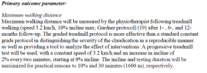

Over 6 weeks the COMPare team analysed 67 trials in the top 5 medical journals to assess the ongoing prevalence of outcome switching in clinical trials, and to find out why it persists. Our methodology can be found here. In this series we will be highlighting the salient lessons learned from this process by describing the analysis of several trials in detail. Each study highlights different ways in which outcomes can be misreported, leading to undetected flaws in the evidence presented in clinical trial reports.
Here we describe our coding of the ERASE trial [1]. The context and overview of this study is described in this editorial. This study was 1 of 13 randomised control trials published in JAMA that we analysed. Of these, 11 contained outcome switching and required a letter of correction. All were rejected by JAMA’s editors; more on that, including full correspondence with JAMA’s editors, here.
Our summary analysis of outcome reporting in the ERASE trial was that:
3/3 pre-specified primary outcomes were correctly reported
21/37 pre-specified secondary outcomes were correctly reported
16/37 pre-specified secondary outcomes were not reported at all
6 additional outcomes were reported that were not pre-specified
But what does that mean? We don’t want people to accept our data on trust alone. The whole point of COMPare is that we want transparency about methods and results: that’s why we share all our raw data. But we also want people to be able to understand how this kind of work is done, and why outcome switching matters. So this blog post uses the ERASE trial as a worked example, to show exactly how we assess a trial for misreported outcomes.
Part 1 – Identifying the pre-specified outcomes
As described in our protocol, the analysis process begins with first identifying the trial commencement date. We then have to find the pre-trial protocol that contains the pre-specified outcomes. If this is not publically available, or is dated after trial commencement, we refer to the online registry to identify pre-specified outcomes. For the ERASE trial, the start date is clearly stated in the abstract as May 17 2010, and version 2 of the protocol, linked directly from the paper, is dated 2009 (Fig. 1).
Figure 1. Dates of trial commencement and protocol submission for ERASE
The outcomes were generally well defined in the protocol, giving the specific variable to be measured, the time point of measurement and the method of measurement. For example, here are the primary outcomes:

Figure 2. Primary outcomes for ERASE, from version 2 of the trial protcol
From this we can see that the primary outcomes are maximum walking distance at 1, 6 and 12 months, giving three primary outcomes in total. Reading the rest of the protocol identified 37 secondary outcomes which were entered into our assessment sheet, giving 40 outcomes in total. We will identify each of these pre-specified secondary outcomes in part 2.
Part 2 – Assessing which pre-specified outcomes were reported
The next step is to systematically scour the paper to determine which of these pre-specified outcomes were reported. When I originally did the first assessment on this trial, I made screen grabs of the outcomes reported in the paper and totted the findings up at the bottom of a powerpoint presentation, to ease discussion at our weekly meeting where every outcome is checked by the team. Here is an example:
Figure 3. Example of how trial analysis was communicated to the COMPare team
So let’s go through the outcomes reported in this trial. As we do so we will tot up the number of pre-specified outcomes reported and omitted in a summary table.
First of all, the primary outcomes of maximum walking distance at 1, 6 and 12 months are clearly reported in Table 2 (Fig. 4).
Figure 4. Primary outcomes 1-3 for ERASE, clearly reported in the trial publication

Now for the secondary outcomes. The first noted in the protocol were preference-based utility measurements EQ-5D and “Rating Scale”, each at three time points: that makes 6 outcomes in total (Fig. 5)
Figure 5. Pre-specified secondary outcomes 1-6 for ERASE, from version 2 of the protocol
We found Rating Scale in Table 3 (called “Rating Score” in the paper – Fig. 6) but were unable to find any reference to EQ-5D in the paper.
Figure 6. Analysis of pre-specified secondary outcomes 1-6 in ERASE. Rating Score (Scale) but not EQ-5D were reported.
Secondary outcomes 7-18 were SF-36 and VascuQol quality of life score as detailed at the top of figure 7, at multiple timepoints.
Figure 7. Pre-specified secondary outcomes 7-18 in ERASE. Protocol entry above and publication table below. Green boxes indicate outcomes that were pre-specified. Red boxes indicate outcomes that were not pre-specified.
SF-36 is a short form health survey questionnaire composed of 36 questions. These questions are divided into 4 physical domains (“General Health”, “Physical Functioning”, “Bodily Pain” and “Physical Role Functioning”) and 4 mental domains (”Vitality”, “Emotional Role Functioning”, “Mental Health” and “Social Functioning”). Each of these domains can be pre-specified independently. The ERASE protocol specifically pre-specifies physical-functioning, social-functioning and physical-role-functioning (3 outcomes at 3 time points, giving 9 outcomes total). Of these, they reported physical-role-functioning and physical-functioning, omitted social functioning, and additionally report bodily pain and general health. No justification was given for the additional reporting of these two subscales in the paper itself – more on this in Part 3.
Secondary outcomes 16-18 (VascuQoL) were correctly reported (Fig. 7). So, we now have…
Secondary outcomes 19-27 were the pain free walking distance and the ABI at rest and after exercise at 1, 6 and 12 months. All of these were correctly reported (Fig. 8)
Figure 8. Pre-specified secondary outcomes 19-27 in ERASE. Protocol entry above, relevant text in publication below.

Secondary outcomes 28-30 were “clinical success”. This was well defined in the protocol (Fig. 9). However, no mention of this was given in the publication nor was its omission justified. To be sure we hadn’t missed this, in addition to both assessors thoroughly reviewing the manuscript with this outcome in mind, three authors scanned key words “clinical” “success” “Rutherford”, “Gardner” and this revealed nothing relevant to this outcome. The authors reported technical success rates for endovascular revascularisation but we did not deem this to be equivalent to the clearly defined pre-specified outcome of clinical success. This takes our running total of unreported outcomes up to 9.
Figure 9. Pre-specified secondary outcomes 28-30 in the ERASE protocol, version 2
Secondary outcome 31 related to cost-effectiveness of the procedure (Fig. 10). This was not reported in the publication but a specific statement is made that this data will be reported elsewhere. This is widely accepted as best practice, and an important illustration of a wider recurring theme: outcomes do sometimes change between the commencement and conclusion of a trial, and there may be good reasons for leaving something unreported, or adding in a novel outcome; however it is important that this is openly declared and discussed in the paper. Consistent with CONSORT guidelines, widely accepted best practice, and our shared operations manual we therefore removed this outcome from our denominator, so our summary statistics remain unchanged.
Figure 10. Pre-specified secondary outcome “therapeutic and total costs” in ERASE. Protocol entry above, relevant text from the report’s introduction below.
The risk of cardiovascular disease was pre-specified as an outcome as shown in figure 12. We interpreted this as a single risk factor score (a composite of Euro SCORE and Framingham CVD risk scores), to be reported at 6 and 12 months, giving secondary outcomes 31-32. No reference to any of these scores were given in the text. No justification was given for these omissions. This takes the number of unreported outcomes to 11.
Figure 11. Pre-specified secondary outcomes 31-32 in the ERASE protocol version 2
Medication use at 6 and 12 months was pre-specified as an outcome (Fig. 13). These outcomes (one measure at two timepoints) were not reported or mentioned in the text of the publication, taking the total number of unreported outcomes to 13.
Figure 12. Pre-specified secondary outcomes 33-34 in the ERASE protocol version 2
Adverse events were pre-specified as shown in figure 14. It is unclear exactly how these were to be reported from this wording, but we would expect a percentage figure for each adverse event pre-specified at each time point. Some reference to these events are made in the free text (e.g. Fig. 15), however our view was that this was inconsistent with the pre-specification.
Figure 13. Pre-specified secondary outcomes 35-37 in the ERASE protocol version 2
Figure 14. Incomplete reference to secondary outcomes 35-37 in the free text of the ERASE report
Well done for making it through that. Hopefully you’ll be able to see that this is a simple process, and should be well within the capabilities of an editorial team to review.
Part 3 – Correcting the record
Having completed our analysis the next stage in the COMPare process is to decide if a letter is warranted to correct the record, and if so draft and submit it. Our summary analysis of outcome reporting in the ERASE trial was that:
3/3 pre-specified primary outcomes were correctly reported
21/37 pre-specified secondary outcomes were correctly reported
16/37 pre-specified secondary outcomes were not reported at all
6 additional outcomes were reported that were not pre-specified
We therefore wrote this letter to JAMA to highlight the discrepancies, following our standard format for letters to journals. As with all our letters, JAMA declined to publish it, on which more here. As a result of JAMA rejecting this correction letter, readers of the journal will be unaware that this trial was misreported on the pages of JAMA: this is especially the case if readers take JAMA’s public commitment to good practice in reporting clinical trials at face value and assume, reasonably, that JAMA has checked all trials that they publish for outcome switching.
A key point raised in this trial is the selective reporting of quality of life subscales. Specifically, in this trial 3 of 8 subscales of the SF-36 were pre-specified, 2 of 3 of these were reported, and an additional 2 subscales that were not pre-specified were also reported. The trialists also failed to report another pre-specified quality of life scale, the EQ-5D. The laxity of reporting of quality of life subscales, if left unchecked, opens the doors for manipulation of trial data by those who may wish to hide unflattering results. In this trial one could, for example, imagine the failure to report the social functioning subscale of SF-36 may hide an effect that would be of interest to a clinician seeking to counsel a patient on the potential drawbacks of endovascular revascularisation for intermittent claudication. On this we should be clear: we certainly don’t believe that every trialist engaging in outcome switching is deliberately massaging their figures; however, the culture of permissiveness around this issue gives cover to those who are manipulating data.
In addition to quality of life subscales we find it odd that “clinical success”, an outcome measure that is key to the aims of the trial, would not be reported. Furthermore, “medication use” was not reported despite being pre-specified as an outcome. In both cases there was no mention that these outcomes were pre-specified anywhere in the text, and the reader is therefore unaware these outcomes were ever under consideration. This makes it very easy for unflattering results to go unreported and unnoticed in the medical literature, robbing patients and clinicians of important evidence which could have a direct impact on clinical decision making. Trials are extremely expensive and administratively cumbersome research projects, conducted for one reason: to exclude bias. After spending all this money on running a trial, it makes no sense for those biases to be re-introduced at the end of the process by permitting selective outcome reporting. Reporting all outcomes correctly reduces bias, it meets the core aim of the trial, and it costs nothing.
We hope this worked example helps to illustrate why outcome switching is important, how it can be identified, and how unhelpful it is that journals not only fail to manage the problem themselves, but also reject attempts to correct the record after they have permitted misreporting.
Aaron Dale, Henry Drysdale, Ben Goldacre, Carl Heneghan on behalf of the COMPare team
March 2016
References:
[1] Fakhry F, Spronk S, van der Laan L, et al. Endovascular Revascularization and Supervised Exercise for Peripheral Artery Disease and Intermittent Claudication: A Randomized Clinical Trial. JAMA. 2015;314(18):1936-1944.
Do you contact the authors directly with your concerns? Even if JAMA and other journals are not doing their job properly, the authors should be given an opportunity to address your reservations!